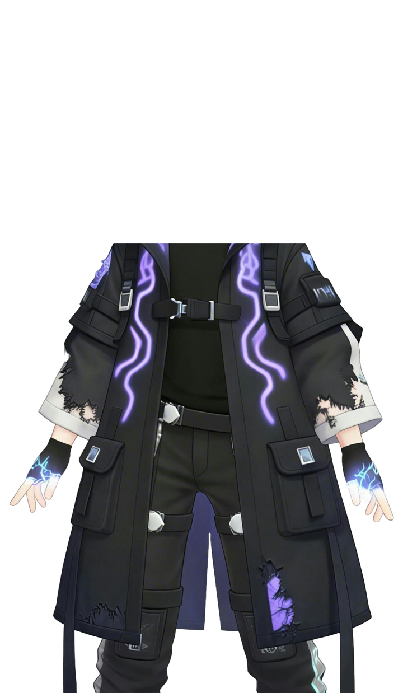
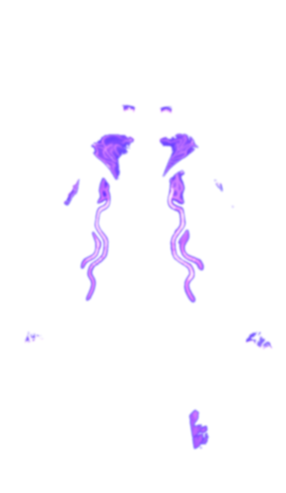
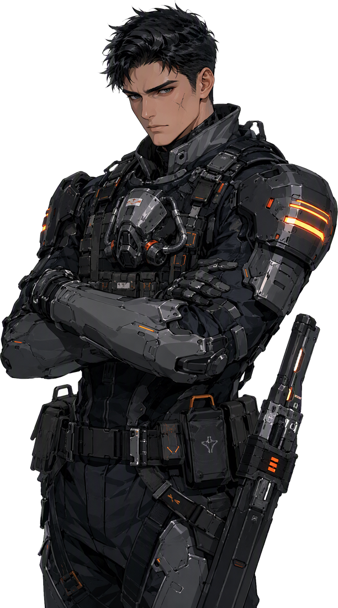

- ❖属性
- ❐故事
- ✦结局
- ⚙系统

报上来历。给你一次机会。
▸「灯塔的规矩：不能有感情，不能有例外，不能有解释不清的东西。」
01认识他
- 身份
猎荒者，第七小队队长。下地面的次数比谁都多，回来的报告比谁都短。
- 日常
清点补给、校枪、把队员的名字一个个对上名册，然后写永远写不完的下降记录。
- 心愿
带下去几个人，就带回来几个人。名册上不要再多一行划掉的字。
- 穿着
猎荒者战术服，肩甲磨掉了漆。战术带上多挂一枚旧胸章——不是他的。
02战术评估
中枢备注：共情倾向低于阈值，适合执行清除任务。
——备注下方有人用笔加了一行：「这项评的不准。」
03他眼里的你
这两项会随你在游戏里的选择变化。现在读的是你最近一次的进度。
- 马克 · 信任
0 - 灯塔 · 关注度
0
04第一幕 · 坠入
- 01坠落
你在自己的画室里画完最后一笔，画布裂开一道紫色的缝。醒来时，你躺在 A-7 区的地面上——灯塔的基因库里查不到你，屏幕上只有两个字：无档案。
- 02遭遇
回廊尽头有个端着枪的人朝你走来。他没有立刻开火，只是要你报上来历。那是马克，第七小队的队长，也是这一章里唯一可能替你说话的人。
- 03抉择
五次选择，改写两条线：他对你的信任，和灯塔对「异色」的关注度。名册、样本、无名——你会走到哪一个，取决于你怎么回答他。
SYSTEM关于这个 Demo
穿越开场动画点 NEW GAME 后播放约 15 秒的原创开场：画室最后一笔 → 画布裂开紫色裂隙 → 坠入漩涡 → 灯塔基因档案检索「NO RECORD」→ 灯塔浮现。全程 CSS/SVG 实时演算，可随时跳过。
OC 常驻左侧Salt全程固定在画面左侧，带呼吸起伏、随机眨眼、鼠标视差与 6 种剧情情绪（默认 / 惊讶 / 恐惧 / 坚定 / 受伤 / 闭眼）。表情用「原图像素 + 羽化面部融合」生成，除表情外每一根头发都与原立绘完全一致。
双层演出环境层有孢子粒子、腥红危险脉冲、故障 Glitch、手电筒探索、速度线与镜头震动；角色层有立绘进退场、情绪切换与受击反馈。
情景视频过场关键抉择后播放 13 秒 Salt × 马克同框过场，由 AI 关键帧 + 运镜合成，可随时跳过。
剧本驱动剧情写在 js/script.js 里，引擎负责渲染。加一段剧情不用改一行引擎代码。
视觉语言封面与 UI 参考《女神异闻录》系列：高饱和紫罗兰单色场、粗犷斜切排版、白底黑字的翻转菜单、半调网点与墨点飞溅，主色叠《灵笼》的腥红。
键盘：空格 / 回车 推进 Ctrl 按住快进 Esc 返回标题。进度自动存在浏览器本地。
ARCHIVE结局档案 · 你走过的路
结局由两件事决定：马克对你的信任，以及灯塔对「异色」的关注度。 每一次抉择都在悄悄改写这两个数——右上角会告诉你它动了。